01
Brand Visuals & Technical Communication
Digital content, brand visuals, and clear visual translation of technical concepts across three technology client projects.
Portfolio
Graphic Designer · UI/UX · Motion & Animation
Graphic and UI/UX designer with a B.A. in Industrial Design and 5+ years across publishing, advertising and digital content — now Founder & Creative Lead of AnimatioNation, an independent 2D animation lab.
Sixteen short self-initiated pieces, each in a different mood, from Persian traditions to international themes.
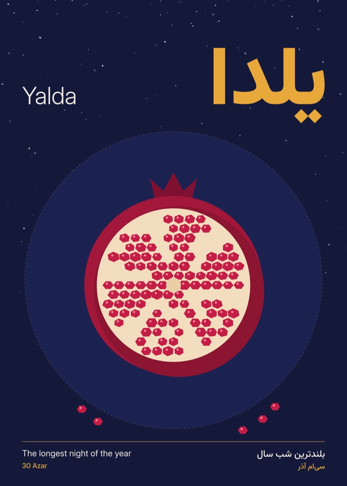
01NocturnalYalda, the Longest Night — Poster 02OrnamentalKashi — Star-and-Cross Tile Pattern
02OrnamentalKashi — Star-and-Cross Tile Pattern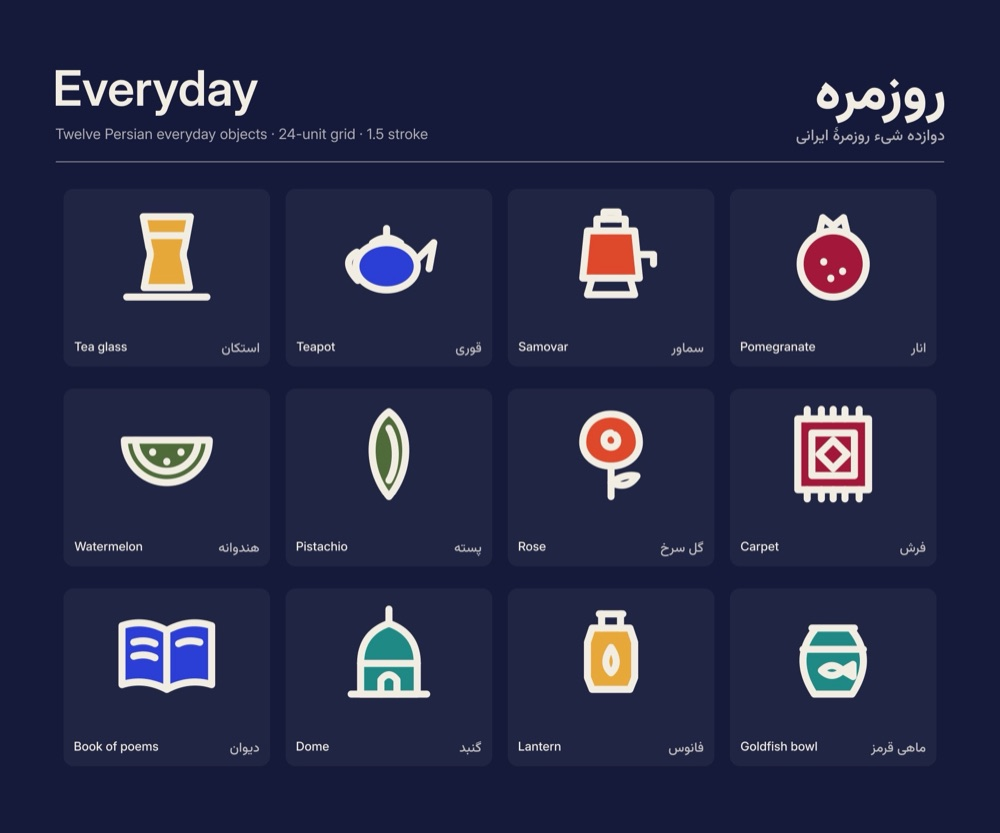
03FunctionalEveryday — Persian Object Icons 04DreamyLake Urmia at Dusk — Vector Landscape
04DreamyLake Urmia at Dusk — Vector Landscape 05BoldDrop by Drop — Proverb Poster
05BoldDrop by Drop — Proverb Poster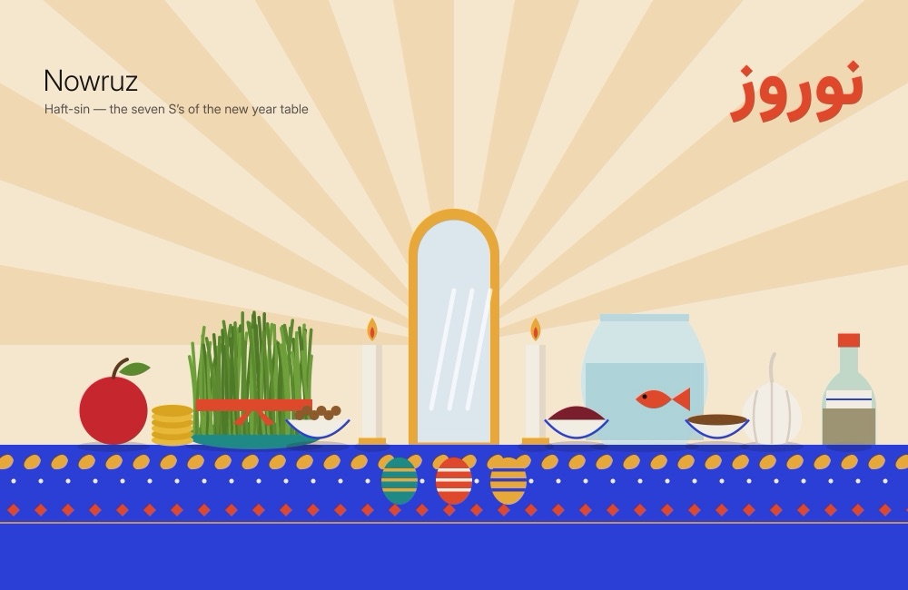
06FestiveNowruz — Haft-sin Still Life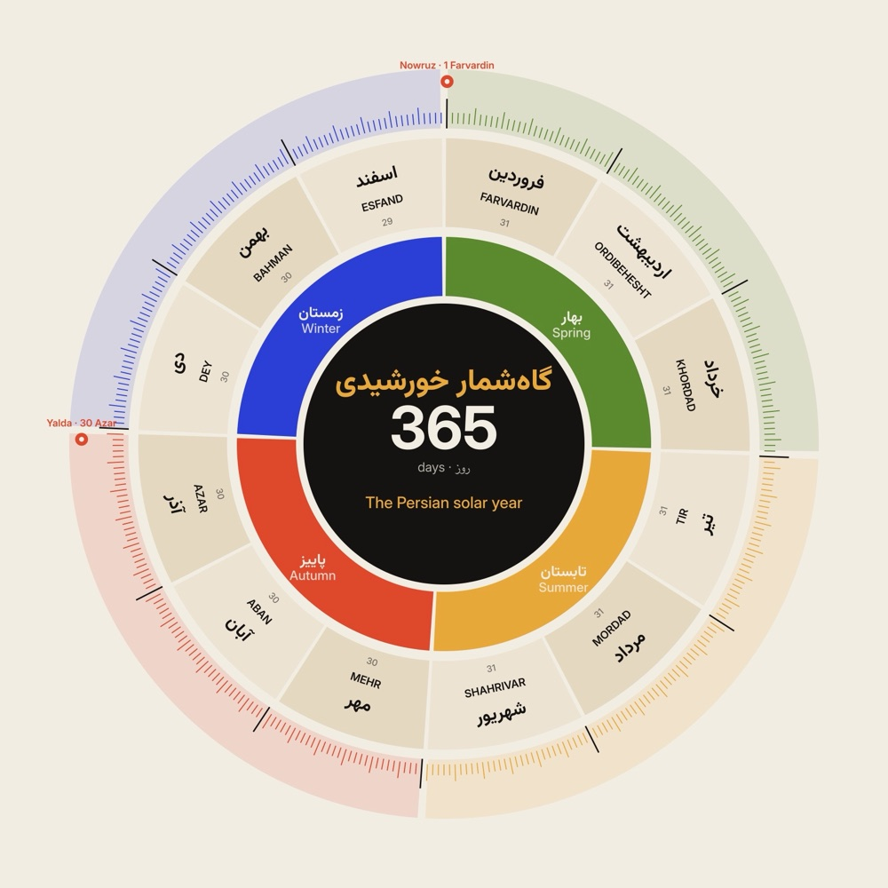
07SystematicThe Persian Solar Year — Calendar Wheel 08HypnoticMoiré — Op-Art Poster
08HypnoticMoiré — Op-Art Poster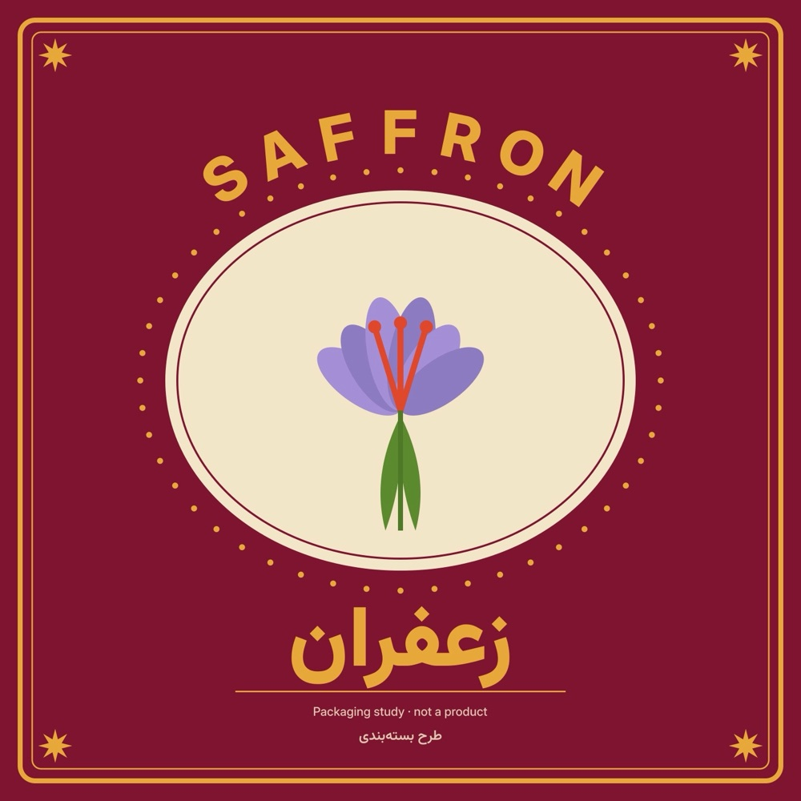
09NostalgicSaffron — Vintage Tin Label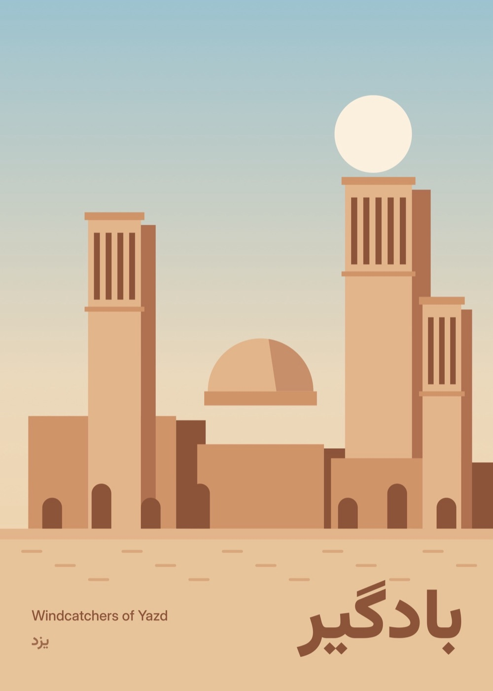
10EarthyWindcatchers of Yazd — Architectural Illustration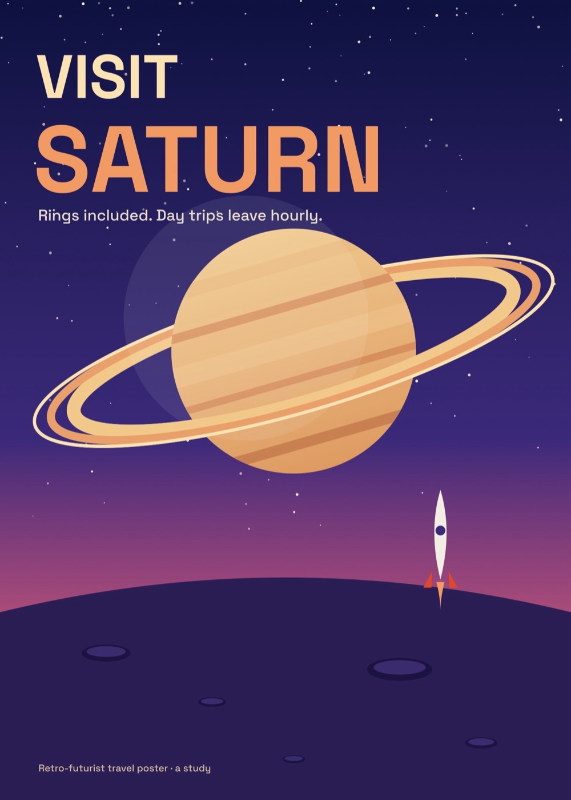
11AdventurousVisit Saturn — Retro-Futurist Travel Poster 12RationalForm Follows Function — Geometric Poster
12RationalForm Follows Function — Geometric Poster 13ScholarlyMonstera deliciosa — Botanical Plate
13ScholarlyMonstera deliciosa — Botanical Plate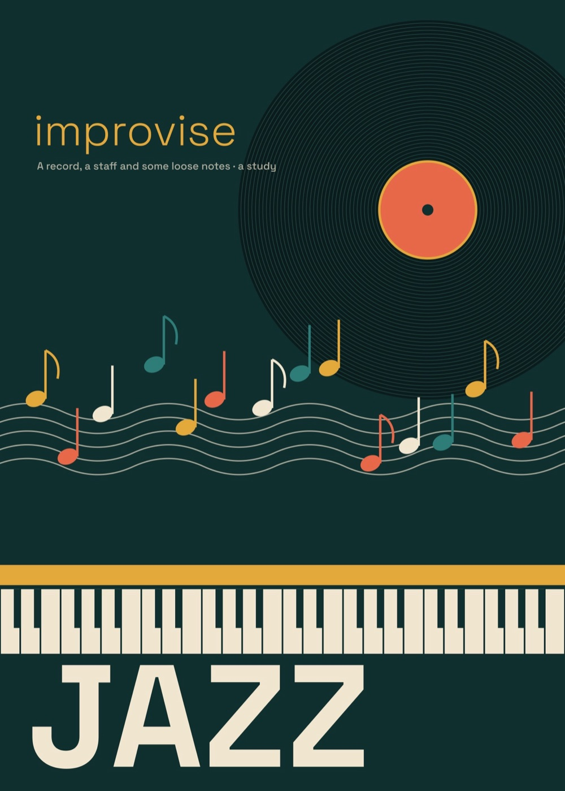
14RhythmicImprovise — Jazz Poster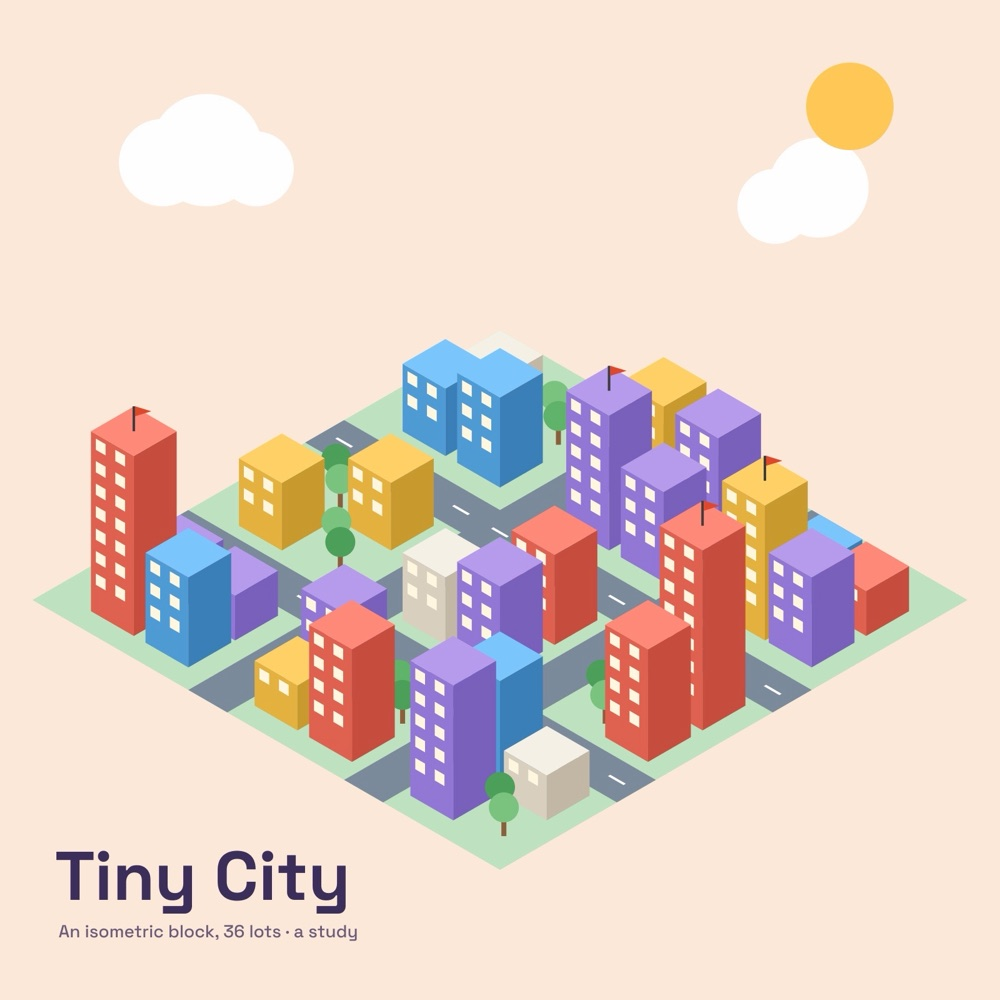
15WhimsicalTiny City — Isometric Illustration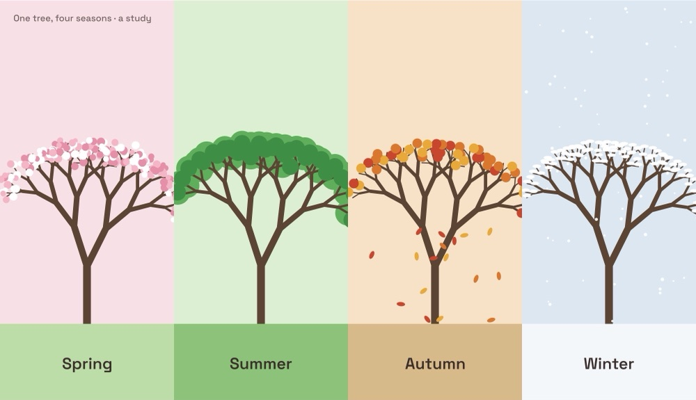
16PoeticOne Tree, Four SeasonsEight projects across brand communication, interface design, publishing, illustration, typography, motion and animation. Projects marked Self-initiated were made for this portfolio.
01
Digital content, brand visuals, and clear visual translation of technical concepts across three technology client projects.
02
A cover series for three public-domain Persian classics, built on one grid, one bilingual type system and two colours on paper.
03
An 8-second cut-paper loop animated on twos: the rose from the Golestan cover opens, holds, and lets its petals fall.
04
Clean Persian analytics dashboard interface featuring conversion rate, lead sources, and call volume data visualizations.
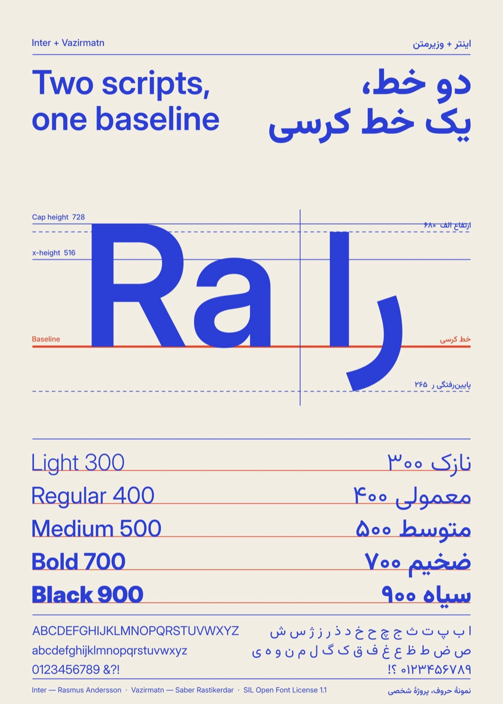
05
A bilingual specimen of Inter and Vazirmatn: a 50 × 70 cm poster and a short loop that set Latin and Persian letters on one shared baseline.
06
An 8-second bilingual loop in which نفس and “Breath” each take one breath, using the weight axis of variable fonts.
07
Designed four published book covers in Adobe Illustrator, and created and managed Instagram content and promotional materials for publication and marketing goals.
08
Created and sold original paintings on mental and social themes, and the “Spiritual Animals” postcard collection.
Earlier and client work, listed with original dates.

Graphic and UI/UX designer with a B.A. in Industrial Design and 5+ years across publishing, advertising, and digital content. Designed four published book covers, wireframes, dashboards and user flows for client projects, and brand visuals for technology teams. Now leading an independent 2D animation lab. I combine design thinking with illustration, motion, and AI-assisted ideation to make complex ideas clear and memorable.
Founded an independent 2D animation lab producing original short-form work; lead a multidisciplinary team from concept, character and worldbuilding through frame-by-frame animation.
Designed digital content, brand visuals and communication materials across three client projects, keeping one consistent visual identity across formats.
Created wireframes, dashboards and user flows for client projects; worked with the team to improve usability.
Designed Instagram content for Kiosk.dxb aligned with brand goals.
Designed four published book covers in Adobe Illustrator; created and managed Instagram content and promotional materials.
Supported senior designers on advertising campaigns; built professional Illustrator workflows.
Created and sold original paintings on mental and social themes and the “Spiritual Animals” postcard collection.
B.A. Industrial Design
Tabriz Islamic Art University · 2024
Persian (native) · English (fluent) · Turkish (advanced) · Kurdish (basic)
For collaborations, projects or a conversation: